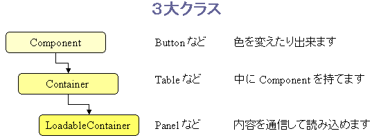

Component, Container, LoadableContainer は orto.ui パッケージの基本となるクラスです。

Component → Container → LoadableContainer の順に継承しています。 リファレンスである javadoc をみると、 特に、Component と Container にたくさんの関数があることがわかります。
Component にはイベント処理と表示設定の関数がたくさん入っています。 イベント処理に関しては次の節で説明します。 表示設定には、色、大きさ、場所、背景画像などを設定できます。
コンテナは中に HTML のタグを持てるコンポーネントのことです。 例えば、<DIV> は中にタグを持てますが、<INPUT type="text"> は 中にタグを持てないので、コンテナではありません。
コンテナ内のコンポーネントを取り出すには、getPanel(id) のように、 HTML 内の ID 属性を目印に、コンポーネントを取り出します。 HTML では、いかなる ID 属性も重複してはならないことになっていて、 JavaScript もそれを前提に設計されているのですが、 それでは、あまりにも使いにくいので、多少は ID 属性が重複しても、 大丈夫なように Orto は作ってあります。
具体的には、getPanel(id) などでは、コンテナから、幅優先探索で、 一つ一つのコンポーネントの ID を調べていっています。つまり、getPanel(id) ならば、コンテナから階層的に一番近い DIV で、指定された ID を持つのが 返ってくるというわけです。
（ここに図を入れたい）
一般の JavaScript(DOM) のように、getElementById(id) や document.all は 使っていません。これらは、ID が重複していると正常に取り出せないからです。
全体とどう絡めて使うかは、プログラミングスタイルで もう一度説明します。
図のとおり、setData() と getData() により、ページ内の情報を、 一発で設定し、一発で取り出すことが可能になります。 これにより、表示情報の管理が非常に楽になります。
setData(data) でデータをセットするアルゴリズムは以下のとおりです。
コンポーネントの種類に応じて、以下の関数で文字列を設定します。
| コンポーネントの種類 | 設定関数 |
|---|---|
| LoadableContainer | setHTML() |
| Button | setLabel() |
| ImageButton | setImage() |
| ImageLabel | setImage() |
| TextBox | setText() |
ListBox, Table, TableRow の場合は何もしません。
getData(data) は、これを逆向きに行います。
このクラスは setHTML(html) や loadHTML(htmlFile) により、 一発でタグ内の内容を設定できます。

また、createPanel() を使って、このコンテナ内に新しいパネルを作ることも出来ます。